Lithuanias Official Statistics Portal (OSP) issues a lot of data which indicates transitions (events) for individuals on each day, aggregated by municipality (Lithuania has 60), gender and age cohort. I aggregate these figures further to generate national data to look at how COVID-19 is now affecting vaccinated and unvaccinated individuals.
All this comes with the caveats that I am working from OSP data but these are my calculations and there may be errors. I am not an epidemiologist. Straightforward presentation of case numbers have not seen much adjustment.
Further calculations (towards estimated vaccine effectiveness) may have error, including in calculations of the unvaccinated population, which influences the estimate of the proportional incidence in the unvaccinated population and thus the relative incidence in vaccinated populations.
Delta has been the dominant strain of SARS-CoV2 in Lithuania since July 2021 and so some of the inflection at that point may be better attributed to the shift of the prevalent strain rather than the base aging of the vaccinations.
Data source
These charts are drawn using data published by the Official Statistics Portal (OSP) on their COVID-19 open data site, along with the annual population counts for Lithuanian municipalities, also published by the OSP.
Show code
library(vroom)
library(dplyr)
library(lubridate)
library(readxl)
library(tidyr)
library(stringr)
library(httr)
library(jsonlite)
library(ggplot2)
library(spatstat)
library(zoo)
library(scales)
library(patchwork)
library(ggrepel)
# Set-up output ----
knitr::opts_chunk$set(
echo = FALSE,
message = FALSE,
warning = FALSE
)
theme_set(
theme_minimal() +
theme(legend.position = "bottom")
)
# set random seed
# this is so that re-running the graph generation on a regular basis (as we do) without
# changing the data (which we do, since the data is now fixed) doesn't generate changed
# graphs (due to the jitter used)
set.seed(6381045)
# dataset source: ----
# https://open-data-ls-osp-sdg.hub.arcgis.com/datasets/1fd352a1c4534afe8ff87c564c0724c0_0/about
# dataset description: ----
# Download functions ----
download_restful <- function (api_call = "",
data_filter = function(x) { return(x) }) {
if(str_length(api_call) == 0) {
message("Empty api_call")
return(NULL)
}
get_data <- GET(api_call)
get_content <- content(get_data, "text")
get_json <- fromJSON(get_content, flatten = TRUE)
get_df <- as.data.frame(get_json$features)
result_offset <- dim(get_df)
result_offset <- result_offset[1]
get_df <- data_filter(get_df)
page <- 1
done_download <- FALSE
supp_data <- get_data
rm("get_data", "get_content", "get_json")
while (!done_download && supp_data$status_code == 200) {
offset <- result_offset * page
page <- page + 1
supp_api_call <-
paste(api_call, "&resultOffset=", sprintf("%d", offset), sep = "")
supp_data <- GET(supp_api_call)
message( ".", appendLF = FALSE)
supp_content <- content(supp_data, "text")
supp_json <- fromJSON(supp_content, flatten = TRUE)
supp_df <- as.data.frame(supp_json$features) %>%
data_filter()
row_count <- dim(supp_json$features)
row_count <- row_count[1]
if (!hasName(supp_json, "exceededTransferLimit")) {
message(
"\nDownload complete"
)
done_download <- TRUE
}
if (supp_data$status_code == 200) {
get_df <- rbind(get_df, supp_df)
} else {
message("\nDownload finished with unexpected status code",
supp_data$status_code
)
break
}
}
return(get_df)
}
#' Download Excel Documents
#' Taken from covidregionaldata library
#'
#' @param url Character string containing the full URL to the Excel document.
#' @param archive Character string naming the file name to assign in the
#' temporary directory.
#' @param transpose Logical, should the read in data be transposed
#' @param ... Additional parameters to pass to `read_excel()`.
#' @inheritParams message_verbose
#' @importFrom readxl read_excel
#' @return A `data.frame`.
download_excel <- function(url, archive, verbose = FALSE,
transpose = TRUE, ...) {
# download
archive <- file.path(tempdir(), archive)
download.file(
url = url,
destfile = archive,
mode = "wb", quiet = !(verbose)
)
# read in
dt <- suppressMessages(
read_excel(archive, ...)
)
if (transpose) {
dt <- t(dt)
}
dt <- as.data.frame(dt)
return(dt)
}
# Download the data ----
if (params$download_data) {
lt_vacc_eff_data <- download_restful(
api_call = "https://services3.arcgis.com/MF53hRPmwfLccHCj/arcgis/rest/services/COVID_u%C5%BEsikr%C4%97timai_tarp_vakcinuot%C5%B3_ir_nevakcinuot%C5%B3/FeatureServer/0/query?where=1%3D1&outFields=*&outSR=4326&f=json" # nolint
) %>%
rename_with(~ gsub("attributes.","", .x)) %>%
mutate(date = as_date(as_datetime(date / 1000)))
# Download the at risk data table for the beginning of 2021
#
# https://ls-osp-sdg.maps.arcgis.com/sharing/rest/content/items/12822ba507864e119d713d14c1971e78/data
initial_state <- download_excel(
"https://ls-osp-sdg.maps.arcgis.com/sharing/rest/content/items/12822ba507864e119d713d14c1971e78/data",
sheet = "initial_states_20210101",
archive = "initial_states",
transpose = FALSE)
save(lt_vacc_eff_data, initial_state,
file = "input_data_ongoing.Rds")
} else {
load("input_data_ongoing.Rds")
}
# Data manipulation ----
lt_natl_ve_data <- tibble(lt_vacc_eff_data) %>%
left_join(initial_state, by=c("municipality","sex","age_gr")) %>%
#select(-object_id) %>%
group_by(date, sex, age_gr) %>%
summarise(across(matches('[icr]\\d[icr]\\d$'), ~ sum(.x, na.rm=TRUE)), r0_init = sum(at_risk)) %>%
ungroup()
lt_natl_ve_data_adults <- tibble(lt_vacc_eff_data) %>%
left_join(initial_state, by=c("municipality","sex","age_gr")) %>%
#select(-object_id) %>%
filter(age_gr != "0-19") %>%
group_by(date, sex, age_gr) %>%
summarise(across(matches('[icr]\\d[icr]\\d$'), ~ sum(.x, na.rm=TRUE)), r0_init = sum(at_risk)) %>%
ungroup()
r0_init_cohorts <- tibble(initial_state) %>%
group_by(sex, age_gr) %>%
summarise(r0 = sum(at_risk))
r0_init <- sum(initial_state$at_risk)
r0_init_adults <- sum(initial_state %>%
filter(age_gr != "0-19") %>%
pull(at_risk))
calculate_ve <-
function(.data) {
#browser()
if (dplyr::is_grouped_df(.data)) {
return(dplyr::do(.data, calculate_ve(.)))
}
#message(str(.data))
# calculate populations in each category
mutate(.data,
censored = r0c0+r0c1+r1c1+r1c2+r2c2+r2c3+r3c3, # per day
infected = r0i0+r0i1+r1i1+r1i2+r2i2+r2i3+r3i3, # per day
r_pop_r0 = r0_init - cumsum(r0r1+r0c0+r0c1+r0i0+r0i1),
r_pop_r1 = cumsum(r0r1-r1r2-r1i1-r1c1-r1i2-r1c2),
r_pop_r2 = cumsum(r1r2-r2r3-r2i2-r2c2-r2i3-r2c3),
r_pop_r3 = cumsum(r2r3-r3c3-r3i3),
) %>%
# fractions of each population infected
mutate(
i_frac_r0 = (r0i0+r0i1) / r_pop_r0,
i_frac_r1 = (r1i1+r1i2) / r_pop_r1,
i_frac_r2 = if_else(r_pop_r2 >0, (r2i2+r2i3) / r_pop_r2, NA_real_),
i_frac_r3 = if_else(r_pop_r3 >0,(r3i3) / r_pop_r3, NA_real_)
) %>%
mutate(
ve_vs_r0_r1 = (i_frac_r0 - i_frac_r1)/i_frac_r0,
ve_vs_r0_r2 = (i_frac_r0 - i_frac_r2)/i_frac_r0,
ve_vs_r0_r3 = if_else(r_pop_r3 != 0,(i_frac_r0 - i_frac_r3)/i_frac_r0, NA_real_)
)
}
inf_comp_wide <- calculate_ve(
lt_natl_ve_data %>%
#filter(date < "2021-01-15") %>%
group_by(date) %>%
summarise(across(matches('[icr]\\d[icr]\\d$'), ~ sum(.x, na.rm=TRUE)), r0_init=sum(r0_init)) %>%
mutate(partially = (r1i1+r1i2) / (r0i0+r0i1+r1i1+r1i2+r2i2+r2i3+r3i3),
fully = (r2i2+r2i3+r3i3) / (r0i0+r0i1+r1i1+r1i2+r2i2+r2i3+r3i3)) %>%
ungroup() )
inf_comp_cohort_wide <- calculate_ve(
lt_natl_ve_data %>%
mutate(month = month(date)) %>%
group_by(month, age_gr, sex) %>%
summarise(across(matches('[icr]\\d[icr]\\d$'), ~ sum(.x, na.rm=TRUE)), r0_init=sum(r0_init)) %>%
mutate(partially = (r1i1+r1i2) / (r0i0+r0i1+r1i1+r1i2+r2i2+r2i3+r3i3),
fully = (r2i2+r2i3+r3i3) / (r0i0+r0i1+r1i1+r1i2+r2i2+r2i3+r3i3)) %>%
ungroup()
)
# inf_comp_cohort_wide %>%
# filter(month>=3) %>%
# ggplot(aes(x=month, y=ve_vs_r0_r2, colour=age_gr, shape=sex)) +
# geom_jitter() +
# geom_line() +
# scale_y_continuous(limits=c(0,1), labels = scales::percent)
#
# inf_comp_cohort_wide %>% ggplot(aes(x=month, y=ve_vs_r0_r2, colour=sex)) + geom_jitter() + facet_grid(rows=vars(age_gr))
infection_comparisons_wide <- lt_natl_ve_data %>% #filter(date < "2021-01-15") %>%
group_by(date) %>%
summarise(across(matches('[icr]\\d[icr]\\d$'), ~ sum(.x, na.rm=TRUE)), r0_init=sum(r0_init)) %>%
mutate(partially = (r1i1+r1i2) / (r0i0+r0i1+r1i1+r1i2+r2i2+r2i3+r3i3),
fully = (r2i2+r2i3+r3i3) / (r0i0+r0i1+r1i1+r1i2+r2i2+r2i3+r3i3)) %>%
ungroup() %>%
# calculate populations in each category
mutate(
censored = r0c0+r0c1+r1c1+r1c2+r2c2+r2c3+r3c3, # per day
infected = r0i0+r0i1+r1i1+r1i2+r2i2+r2i3+r3i3, # per day
#r_pop = r0_init - cumsum(censored + infected),
r_pop_r0 = r0_init - cumsum(r0r1+r0c0+r0c1+r0i0+r0i1),
r_pop_r1 = cumsum(r0r1-r1r2-r1i1-r1c1-r1i2-r1c2),
r_pop_r2 = cumsum(r1r2-r2r3-r2i2-r2c2-r2i3-r2c3),
r_pop_r3 = cumsum(r2r3-r3c3-r3i3)) %>%
# fractions of each population infected
mutate(
i_frac_r0 = (r0i0+r0i1) / r_pop_r0,
i_frac_r1 = (r1i1+r1i2) / r_pop_r1,
i_frac_r2 = if_else(r_pop_r2 >0, (r2i2+r2i3) / r_pop_r2, NA_real_),
i_frac_r3 = if_else(r_pop_r3 >0,(r3i3) / r_pop_r3, NA_real_)
) %>%
mutate(
ve_vs_r0_r1 = (i_frac_r0 - i_frac_r1)/i_frac_r0,
ve_vs_r0_r2 = (i_frac_r0 - i_frac_r2)/i_frac_r0,
ve_vs_r0_r3 = if_else(r_pop_r3 != 0,(i_frac_r0 - i_frac_r3)/i_frac_r0, NA_real_)
)
infection_comparisons_wide_adults <- lt_natl_ve_data_adults %>%
group_by(date) %>%
summarise(across(matches('[icr]\\d[icr]\\d$'), ~ sum(.x, na.rm=TRUE))) %>%
mutate(partially = (r1i1+r1i2) / (r0i0+r0i1+r1i1+r1i2+r2i2+r2i3+r3i3),
fully = (r2i2+r2i3+r3i3) / (r0i0+r0i1+r1i1+r1i2+r2i2+r2i3+r3i3)) %>%
ungroup() %>%
# calculate populations in each category
mutate(
censored = r0c0+r0c1+r1c1+r1c2+r2c2+r2c3+r3c3, # per day
infected = r0i0+r0i1+r1i1+r1i2+r2i2+r2i3+r3i3, # per day
#r_pop = r0_init_adults - cumsum(r0r1+r0c0+r0c1+r0i0+r0i1),
r_pop_r0 = r0_init_adults - cumsum(r0r1+r0c0+r0c1+r0i0+r0i1),
r_pop_r1 = cumsum(r0r1-r1r2-r1i1-r1c1-r1i2-r1c2),
r_pop_r2 = cumsum(r1r2-r2r3-r2i2-r2c2-r2i3-r2c3),
r_pop_r3 = cumsum(r2r3-r3c3-r3i3)) %>%
# fractions of each population infected
mutate(
i_frac_r0 = (r0i0+r0i1) / r_pop_r0,
i_frac_r1 = (r1i1+r1i2) / r_pop_r1,
i_frac_r2 = (r2i2+r2i3) / r_pop_r2,
i_frac_r3 = (r3i3) / r_pop_r3
) %>%
mutate(
ve_vs_r0_r1 = (i_frac_r0 - i_frac_r1)/i_frac_r0,
ve_vs_r0_r2 = (i_frac_r0 - i_frac_r2)/i_frac_r0,
ve_vs_r0_r3 = if_else(r_pop_r3 != 0,(i_frac_r0 - i_frac_r3)/i_frac_r0, NA_real_)
)
# Calculate median vaccination dates ----
median_date <- function(data, cols=c(date="date", sums="sums")) {
sorted_data <- data %>% select(cols) %>%
arrange(cols["date"])
medians <- rep_len(NA_Date_, length(data[[cols["date"]]]))
last_median_idx <- 1
for (i in 1:length(data[[cols["date"]]])) {
if (data[[cols["sums"]]][i]>0) {
if (last_median_idx == 1) {
last_median_idx <- i
medians[i] <- data[[cols["date"]]][last_median_idx]
} else {
if (data[[cols["sums"]]][i] / 2 > data[[cols["sums"]]][last_median_idx] ) {
j <- min(last_median_idx+1,i)
while (data[[cols["sums"]]][i] / 2 > data[[cols["sums"]]][j]) {
j <- j + 1
}
last_median_idx <- j - 1
}
medians[i] <- data[[cols["date"]]][last_median_idx]
}
}
}
return(as_date(medians))
}
narrowed_comps <- infection_comparisons_wide %>%
mutate(fully_vxd_14d = r1r2) %>%
select(date, fully_vxd_14d) %>%
mutate(fully_vxd_14d_tot = cumsum(fully_vxd_14d))
median_age_calcs <- infection_comparisons_wide %>%
mutate(med_date = median_date(data = narrowed_comps,
cols=c(date="date", sums="fully_vxd_14d_tot"))) %>%
mutate(med_vxd_age
= if_else(is.na(med_date),
NA_integer_,
# individuals are only counted into r1r2
# once they are 14 days beyond second dose
as.integer(date) - as.integer(med_date)+14L))
mean_age_values <- tibble(lt_vacc_eff_data) %>%
select(date, r1i1_mdsv, r2i2_mdsv, r1i1_john, r2i2_john) %>%
unique()
# Join median and mean ages and apply a delta measure ----
infection_ages <- left_join(infection_comparisons_wide, mean_age_values,
by=c("date")) %>%
left_join(median_age_calcs %>%select(date, med_vxd_age), by=c("date")) %>%
mutate(delta =
ifelse(date < ymd("2021-05-20"),
FALSE,
ifelse( date > ymd("2021-07-15"),
TRUE,
NA)))
infection_comparisons <- infection_comparisons_wide %>%
pivot_longer(
cols = !c("date"),
values_to = "count",
names_to = "event")
infection_comparisons_adults <- infection_comparisons_wide_adults %>%
pivot_longer(
cols = !c("date"),
values_to = "count",
names_to = "event")
First consider the daily number of new cases from each population: those who are unvaccinated or within 14 days of their first vaccination dose; those who are between doses; and those who have had both doses of a two dose vaccination regime.
Since September the number of breakthrough cases in fully-vaccinated individuals has grown significantly and is now close to the figure for unvaccinated individuals.
Show code
infection_comparisons %>%
group_by(event) %>%
mutate(pc_cases_7d_mean = zoo::rollmean(count,k=7, fill=NA, align="center") ) %>%
ungroup() %>%
filter(event %in% c("r0i0", "r0i1", "r1i1", "r1i2", "r2i2", "r2i3", "r3i3")) %>%
filter(date > ymd("2021-01-7")) %>%
ggplot(aes(x = date, y=pc_cases_7d_mean, colour=event)) +
theme_minimal() +
geom_line(size=1) +
#scale_fill_brewer(palette = "Set2") +
scale_colour_viridis_d(name = "Individual\nvaccination\nstatus",
breaks = c("r0i0", "r0i1", "r1i1", "r1i2", "r2i2", "r2i3", "r3i3"),
labels = c("Unvaccinated or\nless than 14d\nafter 1st dose",
"14d after\n1st dose",
"14+d after\n1st dose",
"14d after\n2nd dose",
"14+d after\n2nd dose",
"14d after\n3rd dose",
"14+d after\n3rd dose")) +
theme(legend.position = "bottom") +
scale_y_continuous(sec.axis = sec_axis(~ .)) +
labs(title="Lithuania - COVID-19 cases by vaccination status",
subtitle="7 day rolling average",
y="New cases",
x="Date",
caption="Richard Martin-Nielsen | Data: Office of Statistics Portal osp.stat.gov.lt") +
scale_x_date()
Looking at the contribution to the number of cases, these cases in fully-vaccinated individuals have increased fairly steadily since July. The number of cases in partially-vaccinated individuals staying fairly constant reflects that this population is staying fairly stable with steady turnover as people complete their two dose vaccination regime.
Show code
infection_comparisons %>%
group_by(event) %>%
mutate(pc_cases_7d_mean = zoo::rollmean(count,k=7, fill=NA, align="center") ) %>%
ungroup() %>%
filter(event %in% c("partially", "fully")) %>%
#filter(date > ymd("2020-11-01")) %>%
ggplot(aes(x = date, y=pc_cases_7d_mean, colour=event)) +
theme_minimal() +
geom_line(size=1) +
#scale_fill_brewer(palette = "Set2") +
scale_colour_viridis_d(name = "Vaccination status",
breaks = c("partially", "fully"),
labels = c("Partially", "Fully")) +
theme(legend.position = "bottom") +
scale_y_continuous( labels = scales::percent,
sec.axis = sec_axis(~ ., labels = scales::percent)) +
labs(title="Lithuania - COVID-19 cases by vaccination status",
subtitle="7 day rolling average as fraction of total infections",
y="New cases",
x="Date",
caption="Richard Martin-Nielsen | Data: Office of Statistics Portal osp.stat.gov.lt") +
scale_x_date()
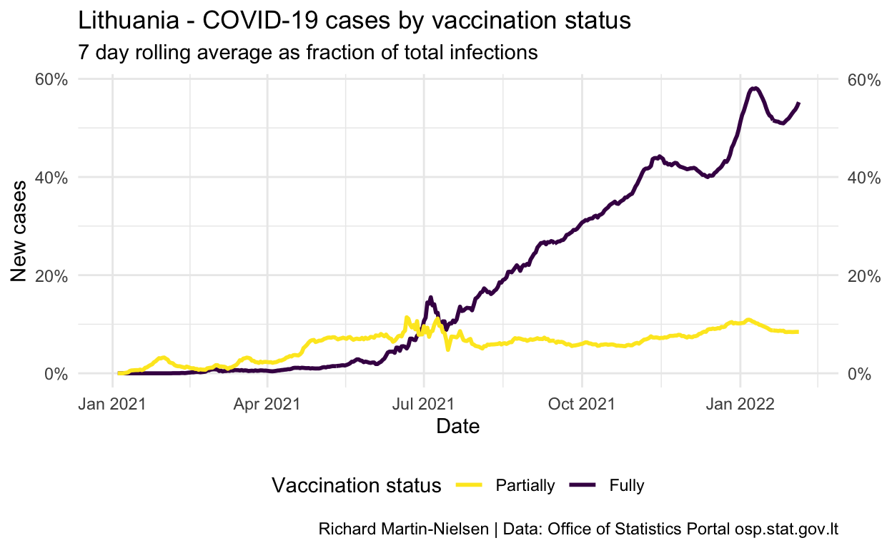
Normalised by the number of people with each vaccination status, incidence peaked for unvaccinated individuals at over 1.5 in late October. The figures for fully- and partially-vaccinated individuals increased slowly since July and peaked a little later. There are some cases among individuals who have had a third booster shot.
Show code
infection_comparisons %>%
group_by(event) %>%
mutate(pc_cases_7d_mean = zoo::rollmean(count,k=7, fill=NA, align="center")*1000 ) %>%
ungroup() %>%
filter(event %in% c("i_frac_r0", "i_frac_r1", "i_frac_r2", "i_frac_r3")) %>%
filter(date > ymd("2021-03-01")) %>%
ggplot(aes(x = date, y=pc_cases_7d_mean, colour=event)) +
theme_minimal() +
geom_line(size=1) +
#scale_fill_brewer(palette = "Set2") +
scale_colour_viridis_d(name = "Vaccination status (14 days after...)",
breaks = c("i_frac_r0", "i_frac_r1", "i_frac_r2", "i_frac_r3"),
labels = c("Unvaccinated",
"First dose",
"Second dose",
"Booster")) +
theme(legend.position = "bottom") +
scale_y_continuous(sec.axis = sec_axis(~ .)) +
labs(title="Lithuania - COVID-19 cases by vaccination status",
subtitle="7 day average cases per 1000 population with that status",
y="New cases",
x="Date",
caption="Richard Martin-Nielsen | Data: Office of Statistics Portal osp.stat.gov.lt") +
scale_x_date()
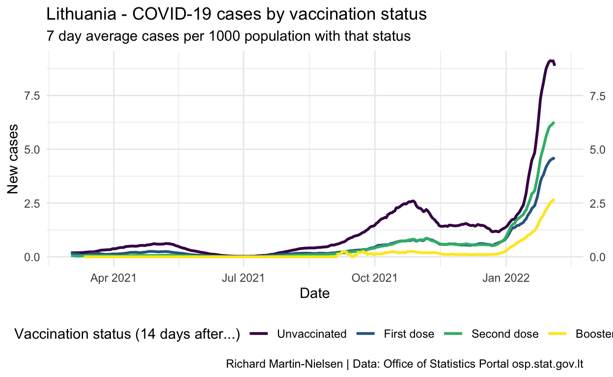
Vaccine effectiveness is calculated by considering the relative incidence among each population compared with the unvaccinated population. This has shown fairly steady decline in fully-vaccinated individuals since July and is now below 35%.
This fading vaccination across the whole population of fully-vaccinated individuals reflects that these vaccinations are aging. Lithuania started vaccinating individuals in early winter 2021. The median age of second dose vaccination is over 150 days (on 20 November).
Show code
med_age_plot <- median_age_calcs %>%
filter(date > ymd("2021-03-01")) %>%
ggplot(aes(x = date, y=med_vxd_age)) +
theme_minimal() +
geom_line(size=1) +
scale_x_date() +
scale_y_continuous(
sec.axis = sec_axis(~ .,
breaks = seq(from = 0, to = 240, by = 30),),
limits = c(0,NA),
breaks = seq(from = 0, to = 240, by = 30),
oob = scales::oob_censor) +
labs(x="Date", y="Median days\nsince 2nd dose")
inf_eff_plot <- infection_comparisons %>%
group_by(event) %>%
mutate(pc_cases_7d_mean = zoo::rollmean(count,k=7, fill=NA, align="center") ) %>%
ungroup() %>%
filter(event %in% c("ve_vs_r0_r1", "ve_vs_r0_r2", "ve_vs_r0_r3")) %>%
filter(date > ymd("2021-03-01")) %>%
filter(pc_cases_7d_mean<1) %>%
ggplot(aes(x = date, y=pc_cases_7d_mean, colour=event)) +
theme_minimal() +
geom_line(size=1) +
#scale_fill_brewer(palette = "Set2") +
scale_colour_viridis_d(name = "Vaccination status (14 days after...)",
breaks = c("ve_vs_r0_r1", "ve_vs_r0_r2", "ve_vs_r0_r3"),
labels = c("First dose",
"Second dose",
"Booster")) +
theme(legend.position = "bottom") +
scale_y_continuous(
sec.axis = sec_axis(
~ .,
breaks = seq(from = 0, to = 1, by = 0.1),
labels = label_percent(accuracy=1)),
limits = c(0,1),
breaks = seq(from = 0, to = 1, by = 0.1),
#limits = c(0,15),
labels = label_percent(accuracy=1),
oob = scales::oob_censor) +
labs(
y="Effectiveness",
y="Date"
) +
scale_x_date()
inf_eff_plot / med_age_plot + plot_layout(heights = c(2,1)) +
plot_annotation(
title="Lithuania - COVID-19 vaccine effectiveness fades beyond 4 months",
subtitle="Calculated on 7 day averages, compared with median days since 2nd dose",
caption="Richard Martin-Nielsen\nData: Office of Statistics Portal osp.stat.gov.lt")
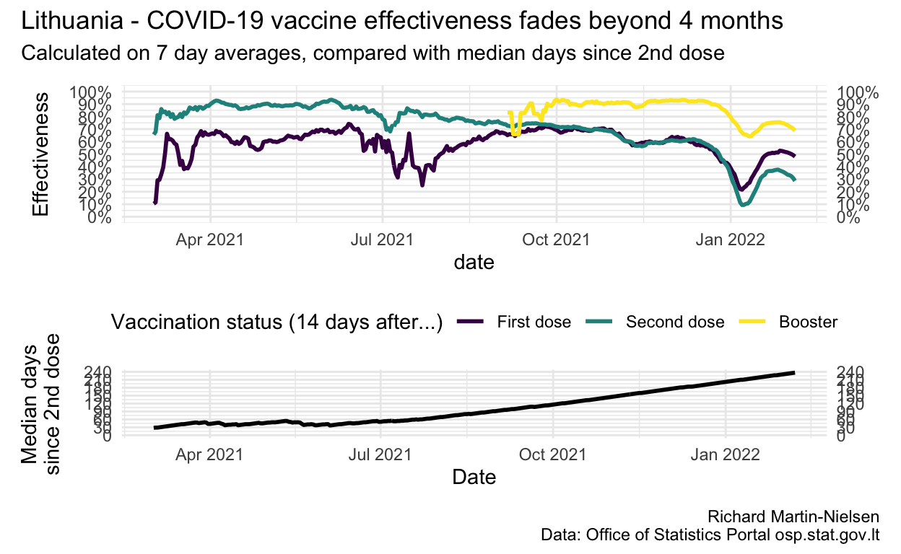
Show code
infection_comparisons %>%
group_by(event) %>%
mutate(pc_cases_14d_mean = zoo::rollmean(count,k=14, fill=NA, align="center") ) %>%
ungroup() %>%
filter(event %in% c("ve_vs_r0_r1", "ve_vs_r0_r2", "ve_vs_r0_r3")) %>%
filter(date > ymd("2021-03-01")) %>%
filter(pc_cases_14d_mean<1) %>%
ggplot(aes(x = date, y=pc_cases_14d_mean, colour=event)) +
theme_minimal() +
geom_line(size=1) +
#scale_fill_brewer(palette = "Set2") +
scale_colour_viridis_d(name = "Vaccination status (14 days after...)",
breaks = c("ve_vs_r0_r1", "ve_vs_r0_r2", "ve_vs_r0_r3"),
labels = c("First dose",
"Second dose",
"Booster")) +
theme(legend.position = "bottom") +
scale_y_continuous(
sec.axis = sec_axis(
~ .,
breaks = seq(from = 0, to = 1, by = 0.1),
labels = scales::percent),
limits = c(0,1),
breaks = seq(from = 0, to = 1, by = 0.1),
#limits = c(0,15),
labels = scales::percent,
oob = scales::oob_censor) +
labs(title="Lithuania - COVID-19 vaccine effectiveness by vaccination status",
subtitle="14 day mean",
y="Vaccine effectiveness",
x="Date",
caption="Richard Martin-Nielsen | Data: Office of Statistics Portal osp.stat.gov.lt") +
scale_x_date()
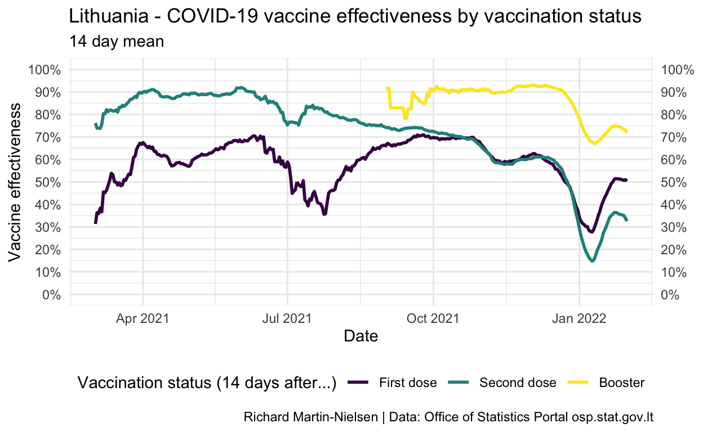
Comparing vaccine effectiveness to vaccine age
OSP provides for each data, the average ages of vaccinations among those who are infected after two doses (r1i1_mdsv and r2i2_mdsv), and I also have a rough calculation of the median age of a double vaccination. (This calculation does not account for removing people who are infected or censored from the population, nor for those who have booster shots, so becomes less useful after November when boosters become more common.)
Both the charts using the vaccine effectiveness after a single shot show the noisiness of this data - including some values below zero.
Based on the graph given in an OSP analysis of vaccine effectiveness for a specific cohort1 I estimate that Delta was less than 10% of infections until 20 May 2021 and more than 90% of infections after 15 July 2021. Measurements for this date range will be excluded.
Show code
infection_ages %>%
filter(r2i2_mdsv>0, !is.na(delta)) %>%
mutate(med_vxd_age = med_vxd_age / 7) %>%
ggplot(aes(colour=date,y=ve_vs_r0_r2,x=med_vxd_age,group=delta)) +
geom_point() +
scale_y_continuous(labels = scales::percent_format()) +
scale_color_date(name="Date") +
geom_smooth() +
labs(
title="Lithuania - COVID-19 fading vaccine effectiveness",
subtitle = "Compared with median number of weeks since second dose",
y="Vaccine effectiveness",
x="Weeks since second dose (total population)",
caption="Richard Martin-Nielsen | Data: Office of Statistics Portal osp.stat.gov.lt")
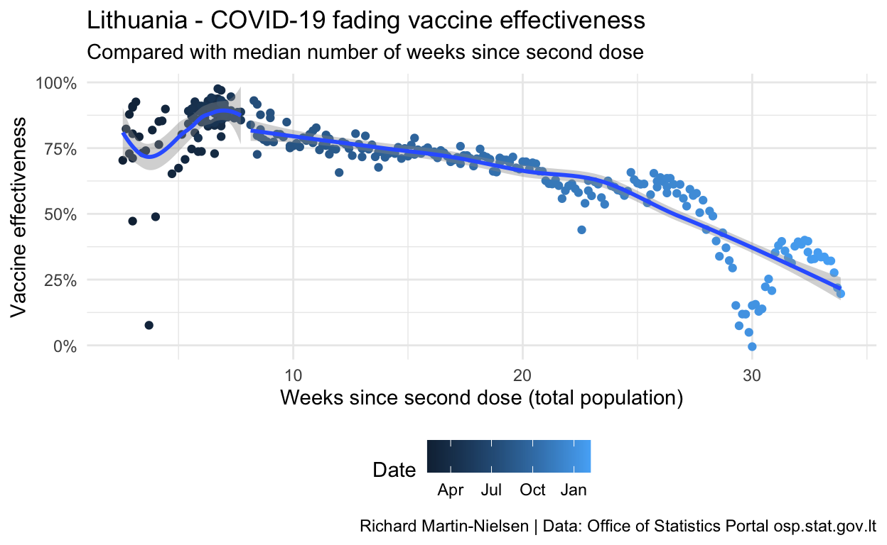
Breaking the data according to a split of Alpha-dominant time period and Delta-dominant periods we see separate trends for the two periods.
Show code
infection_ages %>%
filter(r2i2_mdsv>0, !is.na(delta)) %>%
mutate( r2i2_mdsv = r2i2_mdsv / 7 ) %>%
ggplot(aes(colour=date,y=ve_vs_r0_r2,x=r2i2_mdsv, group=delta)) +
geom_point() +
annotate("text", x=3,y=0.6,label="Alpha-dominant") +
annotate("text", x=20,y=0.8,label="Delta-dominant") +
#annotate("text", x=4.5,y=0.25,label="Lithuanian data") +
scale_y_continuous(labels = scales::percent_format()) +
scale_color_date(name="Date") +
geom_smooth() +
labs(
title="Lithuania - COVID-19 fading vaccine effectiveness",
subtitle = "Compared with average number of weeks since second dose",
y="Vaccine effectiveness",
x="Average weeks since second dose for confirmed cases",
caption="Richard Martin-Nielsen | Data: Office of Statistics Portal osp.stat.gov.lt")
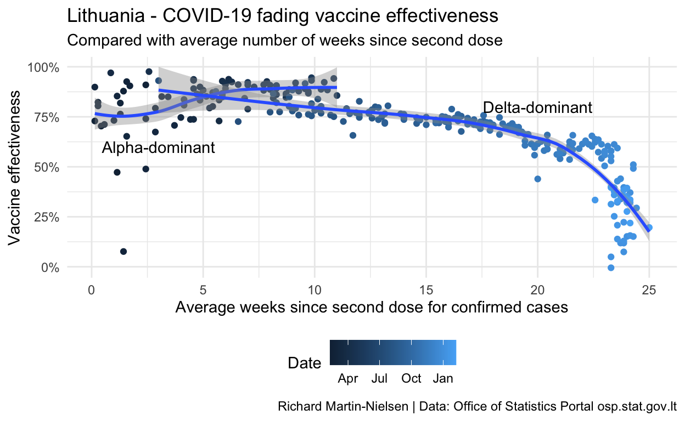
Calculations for vaccine effectiveness after a single dose
These are problematic, with some figures showing negative vaccine effectiveness. I think this is a small numbers problem where the number of cases recorded each day is quite low and so the uncertainty of when cases should be recorded may result in very noisy data. I plan to aggregate these figures by date of report to see if some of these problems may be resolved.
Show code
infection_ages %>%
filter(r1i1_john>0) %>%
mutate(r1i1_john = r1i1_john / 100) %>%
ggplot(aes(colour=date,y=ve_vs_r0_r1,x=r1i1_john)) +
geom_point() +
scale_y_continuous(labels = scales::percent_format()) +
scale_x_continuous(labels = scales::percent_format()) +
scale_color_date(name="Date") +
geom_smooth() +
labs(
title="Lithuania - COVID-19 vaccine effectiveness",
subtitle = "Janssen vaccinations among those infected after one dose",
y="Vaccine effectiveness",
x="Percentage of Janssen vaccinations",
caption="Richard Martin-Nielsen | Data: Office of Statistics Portal osp.stat.gov.lt")
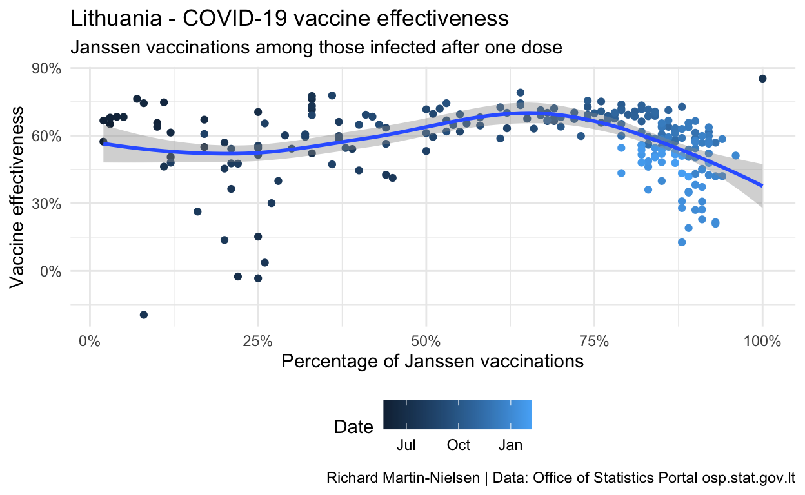
Show code
infection_ages %>%
filter(r1i1_mdsv>7) %>%
mutate( r1i1_mdsv = r1i1_mdsv / 7 ) %>%
ggplot(aes(colour=r1i1_john,y=ve_vs_r0_r1,x=r1i1_mdsv)) +
geom_point() +
scale_y_continuous(labels = scales::percent_format()) +
scale_x_continuous() +
scale_color_continuous(name = "Percent Janssen vaccinations among infected") +
geom_smooth() +
labs(
title="Lithuania - COVID-19 fading vaccine effectiveness",
subtitle = "Compared with time since first dose",
y="Vaccine effectiveness",
x="Mean weeks since first dose",
caption="Richard Martin-Nielsen | Data: Office of Statistics Portal osp.stat.gov.lt")
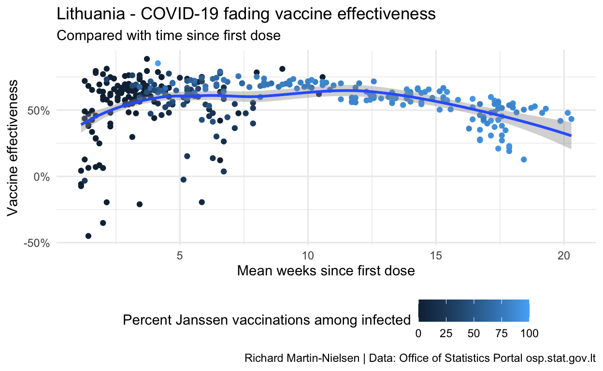
Comparison with vaccine-specific UK results
A UK preprint2 analyses vaccine effectiveness in the UK for three vaccines against symptomatic disease, hospitalisation and death.
The UK studys approach cannot be replicated with the available open data for Lithuania, but the overall results for vaccine effectiveness in protection from disease may be compared, with some limitations based on the differing data available.
Lithuanian data and approximations
For each day, Lithuania provides the mean days since vaccination for all those fall ill more than 14 days after having had two doses of vaccine.3 This value varies compared with the median number of days since vaccination for the entire vaccinated population, which can also be calculated from available open data. This is used to assign all of the cases for a particular day into one of the groups, approximating all the cases by their mean.
Lithuania does not release data differentiating between cases in people vaccinated with one vaccine or another. There is a temporal trend (individuals vaccinated earlier are more likely to be vaccinated with Vaxzevria than Comirnaty) and there are specific occupation-related and age-related biases, but there is no way to usefully guess the vaccine make-up among cases of any particular day.
Lithuania does provide age disaggregated data so it would be possible to make comparisons based on age cohorts but the mean days since vaccination figure is not disaggregated, meaning that the mean value may mask significant variance among age groups.
Show code
infn_age_bins <- infection_ages %>%
mutate(
r2i2_mdsv_weeks = r2i2_mdsv / 7,
med_vxd_age_weeks = med_vxd_age / 7,
mdsv_age_bin =
case_when(
r2i2_mdsv_weeks <= 1 ~ "week 1",
r2i2_mdsv_weeks <= 9 ~ "2-9 weeks",
r2i2_mdsv_weeks <= 14 ~ "10-14 weeks",
r2i2_mdsv_weeks <= 19 ~ "15-19 weeks",
TRUE ~ "20+ weeks"
),
md_vxd_age_bin =
case_when(
med_vxd_age_weeks <= 1 ~ "week 1",
med_vxd_age_weeks <= 9 ~ "2-9 weeks",
med_vxd_age_weeks <= 14 ~ "10-14 weeks",
med_vxd_age_weeks <= 19 ~ "15-19 weeks",
TRUE ~ "20+ weeks"
)
) %>%
mutate(
md_vxd_age_bin =
factor(if_else(is.na(med_vxd_age), NA_character_, md_vxd_age_bin),
c("week 1", "2-9 weeks", "10-14 weeks", "15-19 weeks", "20+ weeks"),
ordered=TRUE),
mdsv_age_bin = factor(if_else(is.na(r2i2_mdsv), NA_character_, mdsv_age_bin),
c("week 1", "2-9 weeks", "10-14 weeks", "15-19 weeks", "20+ weeks"),
ordered=TRUE)
)
binned_ve_calcs_r2 <- infn_age_bins %>%
filter(!is.na(delta), !is.na(mdsv_age_bin)) %>%
group_by(delta,mdsv_age_bin) %>%
summarise(mean(ve_vs_r0_r2*100), sd(ve_vs_r0_r2*100), sd(r_pop_r0)) %>%
mutate(`Dominant strain` = if_else(delta, "Delta", "Alpha"), .before=delta) %>%
rename(`Mean weeks since vaccination`=mdsv_age_bin,
`Vaccine effectiveness [%]`=`mean(ve_vs_r0_r2 * 100)`,
`Standard deviation [%]`=`sd(ve_vs_r0_r2 * 100)`,
`Susceptible population standard deviation`=`sd(r_pop_r0)`) %>%
ungroup() %>%
select(-`delta`)
quibble <- function(x, q = c(0.05, 0.5, 0.95)) {
tibble(x = quantile(x, q), q = q)
}
percentile_ve_calcs_r2 <- infn_age_bins %>%
filter(!is.na(delta), !is.na(mdsv_age_bin)) %>%
group_by(delta,mdsv_age_bin) %>%
summarise(quibble(ve_vs_r0_r2)) %>%
pivot_wider(id_cols=c(delta, mdsv_age_bin), values_from = c(x), names_from = c(q), names_prefix = "ci_")
pretty_percentiles <- percentile_ve_calcs_r2 %>%
ungroup() %>%
transmute(`Dominant strain` = if_else(delta, "Delta", "Alpha"),
`Mean weeks since vaccination`=mdsv_age_bin,
`Vaccine effectiveness [%]`=sprintf("%.1f (%.1f to %.1f)", `ci_0.5`*100, `ci_0.05`*100, `ci_0.95`*100))
# infn_age_bins %>% group_by(mdsv_age_bin, delta) %>%
# count()
# library(boot)
# mean_ve <- function(formula, data, indices) {
# d <- data[indices,] # allows boot to select sample
# return(mean( d))
# #return(summary(fit)$r.square)
# }
# m_ve <- function(d,w) mean(d$ve_vs_r0_r2)
# boot_ve <- boot(data=select(infn_age_bins, date, ve_vs_r0_r2,delta, r2i2_mdsv)%>%filter(r2i2_mdsv > 20,delta, !is.na(ve_vs_r0_r2)), statistic=m_ve, R=1000)
# boot.ci(boot_ve)
#knitr::kable(binned_ve_calcs_r2, digits = 2)
knitr::kable(pretty_percentiles)
| Dominant strain | Mean weeks since vaccination | Vaccine effectiveness [%] |
|---|---|---|
| Alpha | week 1 | 76.8 (70.6 to 94.5) |
| Alpha | 2-9 weeks | 86.4 (66.1 to 93.1) |
| Alpha | 10-14 weeks | 89.0 (86.3 to 94.3) |
| Delta | 2-9 weeks | 81.2 (75.2 to 90.5) |
| Delta | 10-14 weeks | 76.5 (72.1 to 82.9) |
| Delta | 15-19 weeks | 72.1 (68.7 to 75.5) |
| Delta | 20+ weeks | 55.9 (13.1 to 66.1) |
The different trends for the two periods with Alpha- and Delta-dominance are also visible.
Show code
infn_age_bins %>%
filter(!is.na(delta), !is.na(mdsv_age_bin)) %>%
mutate(delta = if_else(delta, "Delta", "Alpha")) %>%
ggplot(aes(x=mdsv_age_bin, y=ve_vs_r0_r2)) +
scale_y_continuous(limits=c(0,1),labels = scales::percent) +
geom_boxplot() +
geom_jitter(alpha=0.5) +
facet_grid(cols=vars(delta)) +
theme(plot.caption=element_text(size = rel(0.8)),
plot.title=element_text(size = rel(1.2)),
axis.text.x=element_text(size = rel(0.8)) ) +
labs(
title="Vaccine effectiveness against COVID infection",
subtitle = "In Alpha- and Delta-dominant periods",
y="Vaccine effectiveness [%]",
x="Weeks since second dose",
caption="Data: Official Statistics Portal, Lithuania")
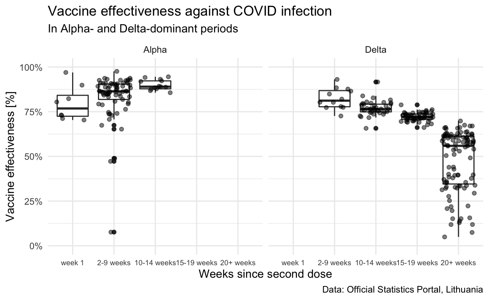
Comparison with UK data
The UK results for vaccine effectiveness giving protection against symptomatic disease are transcribed from Table 1 of the paper.4
Show code
uk_values <- read_excel("UK Paper Tables.xlsx", sheet= "Table 1") %>%
mutate(Cohort
= factor(Cohort,
c("week 1", "2-9 weeks", "10-14 weeks", "15-19 weeks", "20+ weeks"),
ordered=TRUE),
`Age group`
= factor(`Age group`,
c("16+", "16-39", "40-64", "65+"),
ordered=TRUE))
uk_values %>%
mutate(Value = Value/100) %>%
pivot_wider(id_cols = c("Vaccine", "Age group", "Cohort"),
names_from = "Estimate",
values_from = "Value"
) %>%
ggplot(aes(x=Cohort, y=Centre, ymin=Lower, ymax=Upper)) +
#geom_point() +
scale_y_continuous(limits=c(0,1),labels = scales::percent) +
geom_crossbar(size=0.2,width=0.25) +
#geom_errorbar(mapping=aes(ymin=Lower,ymax=Upper)) +
facet_grid(rows=vars(Vaccine), cols=vars(`Age group`)) +
theme(plot.caption=element_text(size = rel(0.5)),
plot.title=element_text(size = rel(1.2)),
axis.text.x=element_text(size = rel(0.4)) ) +
labs(
title="Vaccine effectiveness against symptomatic disease from Delta",
subtitle = "UK data from Nick Andrews et al.",
y="Vaccine effectiveness [%]",
x="Weeks since second dose",
caption="Reproduced with data from \"Vaccine effectiveness and duration of protection of Comirnaty, Vaxzevria and Spikevax against mild and severe COVID-19 in the UK\", Table 1\nNick Andrews, Elise Tessier, Julia Stowe, Charlotte Gower, Freja Kirsebom, Ruth Simmons, Eileen Gallagher,\nMeera Chand, Kevin Brown, Shamez N Ladhani, Mary Ramsay, Jamie Lopez Bernal")
This gives results for four different overlapping age groups. The 16+ has the best overlap with available Lithuanian data.
Show code
uk_values %>%
mutate(Value = Value/100) %>%
filter(`Age group`=="16+") %>%
pivot_wider(id_cols = c("Vaccine", "Age group", "Cohort"),
names_from = "Estimate",
values_from = "Value"
) %>%
ggplot(aes(x=Cohort, y=Centre, ymin=Lower, ymax=Upper, shape=`Vaccine`)) +
#geom_point() +
scale_y_continuous(limits=c(0,1),labels = scales::percent) +
geom_pointrange(size=0.5,width=0.5, position="jitter") +
#geom_errorbar(mapping=aes(ymin=Lower,ymax=Upper)) +
#facet_grid(rows=vars(Vaccine), cols=vars(`Age group`)) +
theme(plot.caption=element_text(size = rel(0.5)),
plot.title=element_text(size = rel(1.2)),
axis.text.x=element_text(size = rel(0.8)) ) +
labs(
title="Vaccine effectiveness against symptomatic disease from Delta",
subtitle = "UK data from Nick Andrews et al., all ages 16+",
y="Vaccine effectiveness [%]",
x="Weeks since second dose",
caption="Reproduced with data from \"Vaccine effectiveness and duration of protection of Comirnaty, Vaxzevria and Spikevax against mild and severe COVID-19 in the UK\", Table 1\nNick Andrews, Elise Tessier, Julia Stowe, Charlotte Gower, Freja Kirsebom, Ruth Simmons, Eileen Gallagher,\nMeera Chand, Kevin Brown, Shamez N Ladhani, Mary Ramsay, Jamie Lopez Bernal")
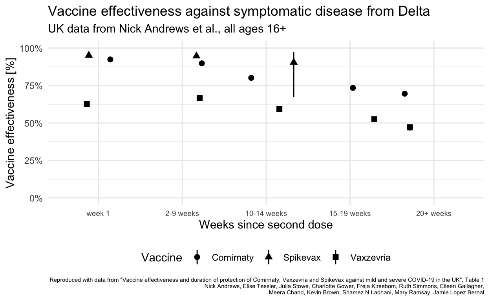
Finally the comparison can be between Lithuanian data for all age groups with UK results for individuals 16+ using one of the two vaccines most commonly used in Lithuania.
Show code
uk_values %>%
mutate(Value = Value/100) %>%
filter(`Age group`=="16+", `Vaccine`!="Spikevax") %>%
pivot_wider(id_cols = c("Vaccine", "Age group", "Cohort"),
names_from = "Estimate",
values_from = "Value"
) %>%
ggplot() +
scale_y_continuous(limits=c(0,1),labels = scales::percent) +
geom_pointrange(mapping=aes(x=Cohort, y=Centre, ymin=Lower, ymax=Upper, shape=`Vaccine`),
size=0.5,width=0.5, position=position_jitter(width=0.05)) +
geom_boxplot(data=infn_age_bins %>%
filter(delta==TRUE, !is.na(mdsv_age_bin)),
mapping=aes(x=mdsv_age_bin, y=ve_vs_r0_r2),colour="grey") +
geom_jitter(data=infn_age_bins %>%
filter(delta==TRUE, !is.na(mdsv_age_bin)),
mapping=aes(x=mdsv_age_bin, y=ve_vs_r0_r2),
alpha=0.5,colour="grey") +
annotate("text", x=1,y=0.55,label="Vaxzevria") +
annotate("text", x=5,y=0.8,label="Comirnaty") +
annotate("text", x=4.5,y=0.25,label="Lithuanian data") +
theme(plot.caption=element_text(size = rel(0.6)),
plot.title=element_text(size = rel(1.2)),
plot.subtitle=element_text(size = rel(0.8)),
axis.text.x=element_text(size = rel(1)),
legend.position = "none") +
labs(
title="Vaccine effectiveness against Delta in Lithuania and the UK",
subtitle = "UK: Comirnaty and Vaxzevria protection against symptomatic disease\nLithuania: Aggregated mix (mainly Vaxzevria & Comirnaty) against confirmed cases",
y="Vaccine effectiveness [%]",
x="Weeks since second dose",
caption="UK data from \"Vaccine effectiveness and duration of protection of Comirnaty, Vaxzevria and Spikevax against mild and severe COVID-19 in the UK\", Table 1\nNick Andrews, Elise Tessier, Julia Stowe, Charlotte Gower, Freja Kirsebom, Ruth Simmons, Eileen Gallagher,\nMeera Chand, Kevin Brown, Shamez N Ladhani, Mary Ramsay, Jamie Lopez Bernal\nLithuania data from the Official Statistics Portal")
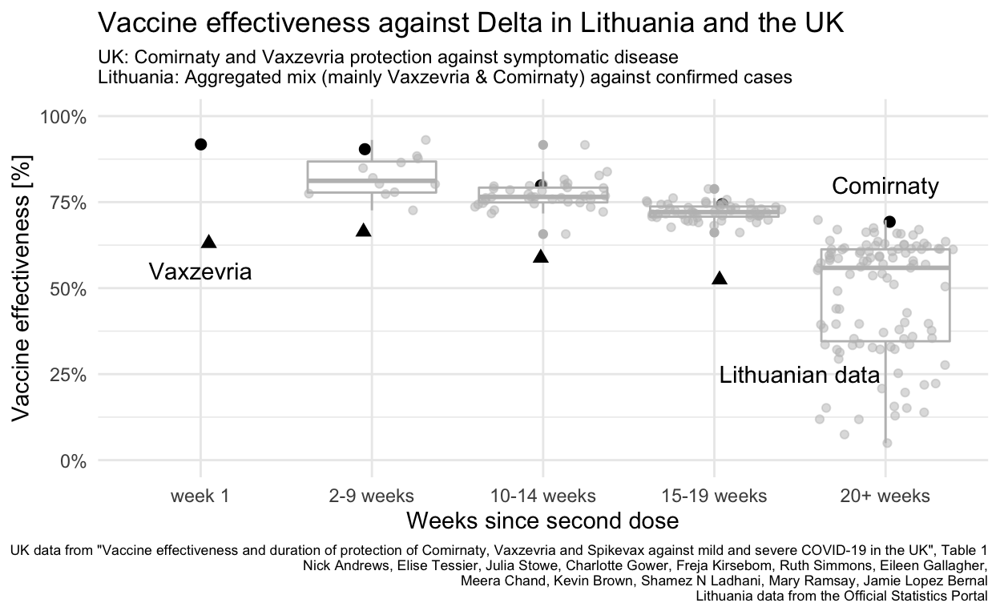
Comments on the comparison
Lithuania did not (unlike the UK and Canada) extend the spacing between first and second doses of Vaxzevria or other vaccines so even if the data were available to differentiate vaccine effectiveness for the different vaccines in use, the resulting effectiveness in Lithuania probably differs because of this difference in how the same vaccines were administered.
Lithuanian figures all fall between the UKs vaccine-specific values for the two vaccines in use, reflecting the mix of vaccines in use in the Lithuanian population (and that this mix is masked by aggregation of the open data available). Vaxzevria was used much more earlier in 2021 than Comirnaty, meaning that older vaccinations are more likely to be with Vaxzevria, which may explain why the Lithuanian data for 20+ weeks are closer to the the UK Vaxzevria values than the Comirnaty value.
Lithuanias vaccination rate for under 18 is very low (and zero below 12). It is not clear whether this comparison would be improved by excluding all Lithuanians under 20.
Calculations excluding under-20s
Because the level rate of vaccination among Lithuanians below the age of 20 is much lower than in the rest of the population, I also present calculations which only consider the population of 20 and above.
First, here is a chart from the OSP showing the vaccination status by age group.

The vaccine is not available for children under the age of 11, and though figures for 18 and 19 year-olds are comparable with older adults, the data for vaccination and infection/censoring are only available on 20 year increments.
Show code
infection_comparisons_adults %>%
group_by(event) %>%
mutate(pc_cases_7d_mean = zoo::rollmean(count,k=7, fill=NA, align="center") ) %>%
ungroup() %>%
filter(event %in% c("partially", "fully")) %>%
#filter(date > ymd("2020-11-01")) %>%
ggplot(aes(x = date, y=pc_cases_7d_mean, colour=event)) +
theme_minimal() +
geom_line(size=1) +
#scale_fill_brewer(palette = "Set2") +
scale_colour_viridis_d(name = "Vaccination status",
breaks = c("partially", "fully"),
labels = c("Partially", "Fully")) +
theme(legend.position = "bottom") +
scale_y_continuous( labels = scales::percent,
sec.axis = sec_axis(~ ., labels = scales::percent)) +
labs(title="Lithuania - COVID-19 cases by vaccination status - 20+ only",
subtitle="7 day rolling average as fraction of total infections",
y="New cases",
x="Date",
caption="Richard Martin-Nielsen | Data: Office of Statistics Portal osp.stat.gov.lt") +
scale_x_date()

Show code
infection_comparisons_adults %>%
group_by(event) %>%
mutate(pc_cases_7d_mean = zoo::rollmean(count,k=7, fill=NA, align="center")*1000 ) %>%
ungroup() %>%
filter(event %in% c("i_frac_r0", "i_frac_r1", "i_frac_r2", "i_frac_r3")) %>%
filter(date > ymd("2021-03-01")) %>%
ggplot(aes(x = date, y=pc_cases_7d_mean, colour=event)) +
theme_minimal() +
geom_line(size=1) +
#scale_fill_brewer(palette = "Set2") +
scale_colour_viridis_d(name = "Vaccination status (14 days after...)",
breaks = c("i_frac_r0", "i_frac_r1", "i_frac_r2", "i_frac_r3"),
labels = c("Unvaccinated",
"First dose",
"Second dose",
"Booster")) +
theme(legend.position = "bottom") +
scale_y_continuous(sec.axis = sec_axis(~ .)) +
labs(title="Lithuania - COVID-19 cases by vaccination status, 20+ only",
subtitle="7 day average cases per 1000 population with that status",
y="New cases",
x="Date",
caption="Richard Martin-Nielsen | Data: Office of Statistics Portal osp.stat.gov.lt") +
scale_x_date()
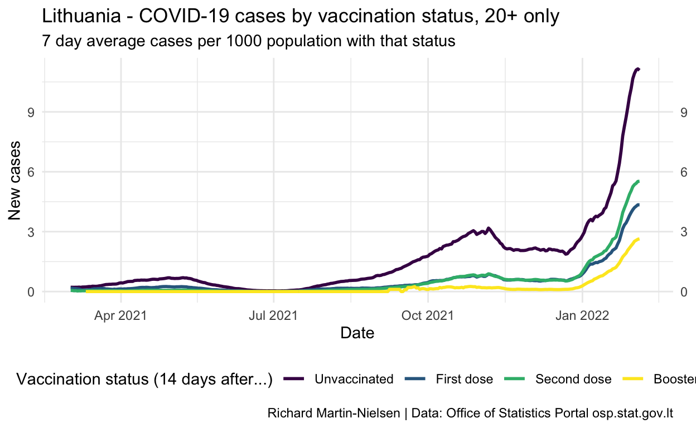
Show code
inf_eff_plot_adults <- infection_comparisons_adults %>%
group_by(event) %>%
mutate(pc_cases_7d_mean = zoo::rollmean(count,k=7, fill=NA, align="center") ) %>%
ungroup() %>%
filter(event %in% c("ve_vs_r0_r1", "ve_vs_r0_r2", "ve_vs_r0_r3")) %>%
filter(date > ymd("2021-03-01")) %>%
filter(pc_cases_7d_mean<1) %>%
ggplot(aes(x = date, y=pc_cases_7d_mean, colour=event)) +
theme_minimal() +
geom_line(size=1) +
#scale_fill_brewer(palette = "Set2") +
scale_colour_viridis_d(name = "Vaccination status (14 days after...)",
breaks = c("ve_vs_r0_r1", "ve_vs_r0_r2", "ve_vs_r0_r3"),
labels = c("First dose",
"Second dose",
"Booster")) +
theme(legend.position = "bottom") +
scale_y_continuous(
sec.axis = sec_axis(
~ .,
breaks = seq(from = 0, to = 1, by = 0.1),
labels = label_percent(accuracy=1)),
limits = c(0,1),
breaks = seq(from = 0, to = 1, by = 0.1),
#limits = c(0,15),
labels = label_percent(accuracy=1),
oob = scales::oob_censor) +
labs(
y="Effectiveness",
y="Date"
) +
scale_x_date()
inf_eff_plot_adults / med_age_plot + plot_layout(heights = c(2,1)) +
plot_annotation(
title="Lithuania - COVID-19 vaccine effectiveness fades beyond 4 months",
subtitle="Calculated on 7 day averages, ages 20+, compared with median days since 2nd dose",
caption="Richard Martin-Nielsen\nData: Office of Statistics Portal osp.stat.gov.lt")
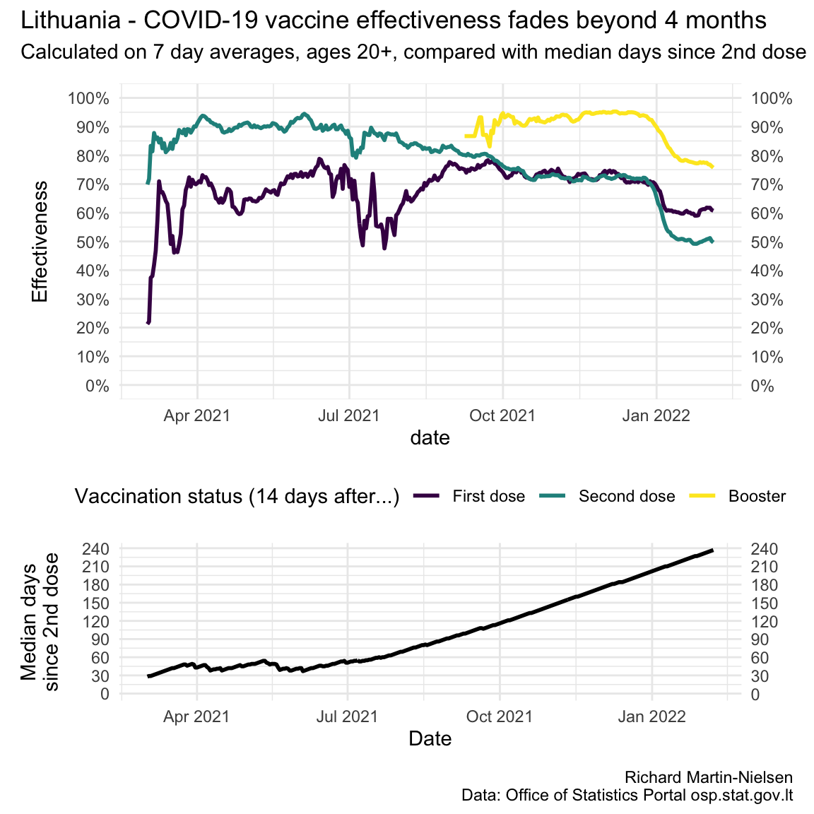
Dataset description (English translation)
google translation of original Lithuanian5
The table is intended for monitoring the incidence of infections in four groups of the Lithuanian population: unvaccinated and those who received one / two / three doses of vaccine. The columns in the table describe how many events of each type occurred on a particular day. A total of 17 events are described. Events can only happen to Lithuanian residents who have never been infected before. Event tracking begins on January 1, 2021. The table is aggregated by date, municipality (60 units), gender (2 units), age group (8 units), so each row describes the number of events that occurred on a specific date for a specific age-specific population in a particular municipality.
An integral part of this table is the auxiliary table Initial conditions, on 01.01.2021, which describes the number of persons who may become infected at the beginning of 2021-01-01. Only with these two tables is it possible to calculate the frequency of infections (normalized daily number of infections) per day from which preliminary conclusions on the efficacy of vaccines can be drawn.
Column description:
| field | description |
|---|---|
| date | is the day of 2021 on which the events described in the following columns occurred |
| municipality | the municipality of the declared place of residence, describing the group of persons participating in the events |
| sex | gender describing the group of persons involved in the events: V = men, M = women |
| age_gr | an age category that describes the group of people participating in the events |
| r0i0 | unvaccinated * who became infected for the first time (event - first infection) |
| r0r1 | unvaccinated * who have been vaccinated (event - vaccination) |
| r0c0 | unvaccinated * who fell out of the risk of infection (censored persons, statistical term, **) |
| r0i1 | unvaccinated * who have been vaccinated and become infected for the first time |
| r0c1 | unvaccinated * who have been vaccinated and are at risk of becoming infected |
| r1i1 | 1 dose vaccinated * who became infected for the first time |
| r1r2 | 1 dose vaccinated * who became vaccinated with the second dose |
| r1c1 | 1 dose vaccinated * who were at risk of infection (censored persons, statistical term, **) |
| r1i2 | 1 dose vaccine * who became vaccinated with a second dose and became infected for the first time |
| r1c2 | 1 dose vaccine * who became vaccinated with the second dose and were at risk of infection |
| r2i2 | 2 doses to be vaccinated * who became infected for the first time |
| r2r3 | 2 doses to be vaccinated *, which became the third dose |
| r2c2 | 2 doses to be vaccinated * who fell out of the risk of infection (censored persons, statistical term, **) |
| r2i3 | 2 doses *, which became the third dose and became infected for the first time |
| r2c3 | 2 doses * that became the third dose and fell out of the risk of infection |
| r3i3 | 3 doses to be vaccinated * who became infected for the first time |
| r3c3 | 3 doses to be vaccinated * who fell out of the risk of infection (censored persons, statistical term, ***) |
| r1i1_mdsv | average number of days since the first vaccination in the r1i1 group (***) |
| r2i2_mdsv | average number of days since the second vaccination in the r2i2 group (***) |
| r1i1_john | percentage of Janssen vaccine recipients in the r1i1 group (***) |
| r2i2_john | percentage of vaccinated Janssen vaccine (as first dose) in the r2i2 group (***) |
Column naming logic:
- first pair of two characters (eg r1) - what state the persons leave during the described event
- second pair of two characters (eg i2) - what state persons enter during the described event
| first character of the character pair (letter) | |
|---|---|
| r | at risk; people who may become infected (i.e., this has not happened before) |
| i | infected; persons who are infected (first positive diagnostic test) |
| c | censored; persons who are not and cannot be infected (**) |
| second character of the character pair (number) | |
|---|---|
| 0 | persons who have not yet been vaccinated on a given day or have been vaccinated very recently (<in the course of 14 days) * |
| 1 | persons who have already been vaccinated on a given day 14 days after the first dose or who have received a second dose very recently (<in the course of 14 days) * |
| 2 | persons who have been vaccinated for 14 days on a given day since the second dose or who have received a third dose very recently (<14 days) * |
| 3 | persons who have already 14 days since the third dose of the vaccine on a given day * |

Footnotes:
* The effect of the vaccine is considered to start on day 14 from the actual date of vaccination, so in this table describing the effectiveness of the vaccines, the person is considered unvaccinated on the actual day of the first vaccination (as well as on the thirteenth day after the first vaccination). The same principle applies to the second and third doses of the vaccine: they take effect on the 14th day after the actual date of the vaccination.
** unsupervised persons (without follow-up, censored), e.g.due to emigration, lost contact, death, etc.
*** calculated for all municipalities, all genders, all age groups in total (for confidentiality)
Dataset description (Lithuanian original)
Lentel yra skirta usikrtim daniams stebti keturiose Lietuvos gyventoj grupse: neskiepytj bei skiepytj viena/dviem/trim vakcinos dozmis. Lentels stulpeliai aprao, kiek kiekvienos ries vyki vyko konkrei dien. I viso yra apraoma 17 vyki. vykiai gali vykti tik su iki tol dar niekada neusikrtusiais Lietuvos gyventojais. vyki stebjimas prasideda nuo 2021 met sausio 1 dienos. Lentel yra agreguota pagal dat, savivaldyb (60 vnt), lyt (2 vnt), amiaus grup (8 vnt), tad kiekviena eilut aprao vyki skaii, kuris nutiko konkrei dat konkreios savivaldybs konkreios lyties konkreios amiaus grups gyventojams.
ios lentels neatsiejama dalis yra pagalbin lentel Pradins bsenos, 2021-01-01 dien, kuri aprao asmen, galini usikrsti skaii 2021-01-01 dienos pradioje. Tik turint ias abi lenteles manoma suskaiiuoti usikrtim dan (normalizuot dienin usikrtim skaii) padieniui, i kurio galima daryti preliminarias ivadas apie vakcin efektyvum.
Stulpeli apraymas:
| field | description |
|---|---|
| date | 2021 met diena, kurios metu vyko tolimesniuose stulpeliuose apraomi vykiai |
| municipality | deklaruotos gyvenamosios vietos savivaldyb, apraanti vykiuose dalyvaujani asmen grup |
| sex | lytis, apraanti vykiuose dalyvaujani asmen grup: V = vyrai, M = moterys |
| age_gr | amiaus kategorija, apraanti vykiuose dalyvaujani asmen grup |
| r0i0 | neskiepyti*, kurie pirm kart tapo usikrtusiais (vykis - pirmas usikrtimas) |
| r0r1 | neskiepyti*, kurie tapo paskiepytais (vykis - paskiepijimas) |
| r0c0 | neskiepyti*, kurie ikrito i rizikos usikrsti (cenzruoti asmenys, statistikos terminas, **) |
| r0i1 | neskiepyti*, kurie tapo paskiepytais ir pirm kart tapo usikrtusiais |
| r0c1 | neskiepyti*, kurie tapo paskiepytais ir ikrito i rizikos usikrsti |
| r1i1 | 1 doze skiepyti*, kurie pirm kart tapo usikrtusiais |
| r1r2 | 1 doze skiepyti*, kurie tapo paskiepytais antra doze |
| r1c1 | 1 doze skiepyti*, kurie ikrito i rizikos usikrsti (cenzruoti asmenys, statistikos terminas, **) |
| r1i2 | 1 doze skiepyti*, kurie tapo paskiepytais antra doze ir pirm kart tapo usikrtusiais |
| r1c2 | 1 doze skiepyti*, kurie tapo paskiepytais antra doze ir ikrito i rizikos usikrsti |
| r2i2 | 2 dozm skiepyti*, kurie pirm kart tapo usikrtusiais |
| r2r3 | 2 dozm skiepyti*, kurie tapo paskiepytais treia doze |
| r2c2 | 2 dozm skiepyti*, kurie ikrito i rizikos usikrsti (cenzruoti asmenys, statistikos terminas, **) |
| r2i3 | 2 dozm skiepyti*, kurie tapo paskiepytais treia doze ir pirm kart tapo usikrtusiais |
| r2c3 | 2 dozm skiepyti*, kurie tapo paskiepytais treia doze ir ikrito i rizikos usikrsti |
| r3i3 | 3 dozm skiepyti*, kurie pirm kart tapo usikrtusiais |
| r3c3 | 3 dozm skiepyti, kurie ikrito i rizikos usikrsti (cenzruoti asmenys, statistikos terminas, **) |
| r1i1_mdsv | vidutinis dien skaiius prajs nuo pirmo skiepo r1i1 asmen grupje (***) |
| r2i2_mdsv | vidutinis dien skaiius prajs nuo antro skiepo r2i2 asmen grupje (***) |
| r1i1_john | vakcinuotj Janssen vakcina procentas r1i1 asmen grupje (***) |
| r2i2_john | vakcinuotj Janssen vakcina (kaip pirma doze) procentas r2i2 asmen grupje (***) |
Stulpeli pavadinimo sudarymo logika:
- pirma dviej simboli pora (pvz r1) - i kokios bsenos asmenys ieina apraomo vykio metu
- antra dviej simboli pora (pvz i2) - koki bsen asmenys eina apraomo vykio metu
| pirmas simboli poros simbolis (raid): | |
|---|---|
| r | at risk; asmenys, kurie gali usikrsti (t.y., tai dar neatsitiko anksiau) |
| i | infected; asmenys, kurie yra usikrt (pirmas teigiamas diagnostinis testas) |
| c | censored; asmenys, kurie nra usikrt ir negali usikrsti (**) |
| antras simboli poros simbolis (skaiius): | |
|---|---|
| 0 | asmenys, kurie konkrei dien dar yra neskiepyti arba yra paskiepyti labai neseniai (<14 d.eigoje) * |
| 1 | asmenys, kuriems konkrei dien nuo pirmos skiepo dozs jau yra praj 14 dien, arba jie yra paskiepyti antra doze labai neseniai (<14 d.eigoje) * |
| 2 | asmenys, kuriems konkrei dien nuo antros skiepo dozs jau yra praj 14 dien, arba jie yra paskiepyti treia doze labai neseniai (<14 d.eigoje) * |
| 3 | asmenys, kuriems konkrei dien nuo treios skiepo dozs jau yra praj 14 dien * |
Detali lentels turinio paaikinimo logika iliustracijoje:
Inaos:
* laikoma, kad vakcinos efektas prasideda 14- dien nuo faktins skiepijimo datos, tad ioje lentelje, apraanioje vakcin efektyvum, asmuo faktin pirmo skiepo dien (o taip pat ir trylikt dien po pirmo skiepo) yra laikomas nevakcinuotu. Toks pat principas taikomas ir antrai bei treiai skiepo dozms: jos sigalioja 14- dien nuo faktins skiepijimo datos.
** nebestebimi asmenys (be follow-up, censored), pvz. dl emigracijos, prarasto kontakto, mirties ir pan.
*** apskaiiuota visoms savivaldybms, visom lytims, visoms amiaus grupms bendrai (dl konfidencialumo)
https://osp.stat.gov.lt/documents/10180/9098881/Pfizer_Delta_efektyvumas_20210915_v1_JB.pdf, accessed from https://osp.stat.gov.lt/duomenu-apzvalga-2021-09-15
Vaccine effectiveness and duration of protection of Comirnaty, Vaxzevria and Spikevax against mild and severe COVID-19 in the UK", by Nick Andrews, Elise Tessier, Julia Stowe, Charlotte Gower, Freja Kirsebom, Ruth Simmons, Eileen Gallagher, Meera Chand, Kevin Brown, Shamez N Ladhani, Mary Ramsay, Jamie Lopez Bernal, doi: https://doi.org/10.1101/2021.09.15.21263583
Vaccine effectiveness and duration of protection of Comirnaty, Vaxzevria and Spikevax against mild and severe COVID-19 in the UK", by Nick Andrews, Elise Tessier, Julia Stowe, Charlotte Gower, Freja Kirsebom, Ruth Simmons, Eileen Gallagher, Meera Chand, Kevin Brown, Shamez N Ladhani, Mary Ramsay, Jamie Lopez Bernal, doi: https://doi.org/10.1101/2021.09.15.21263583
https://open-data-ls-osp-sdg.hub.arcgis.com/datasets/1fd352a1c4534afe8ff87c564c0724c0_0/about